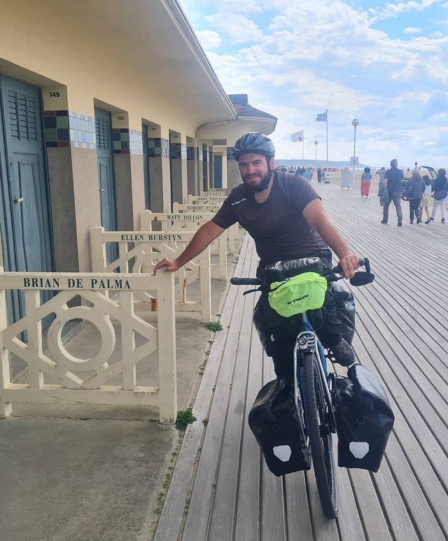
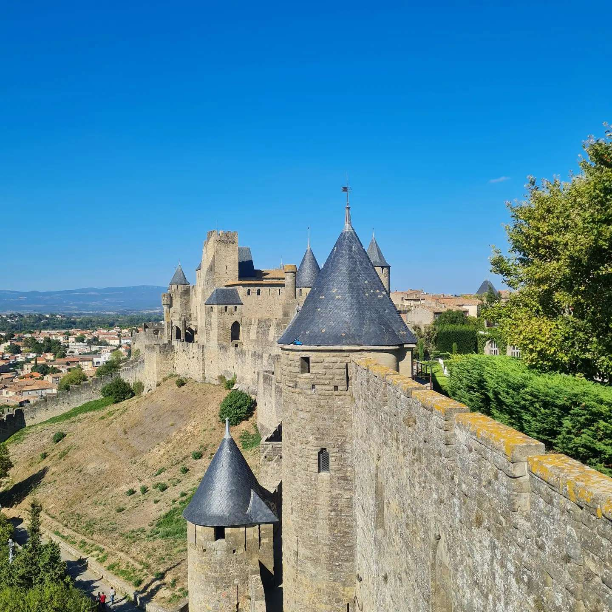
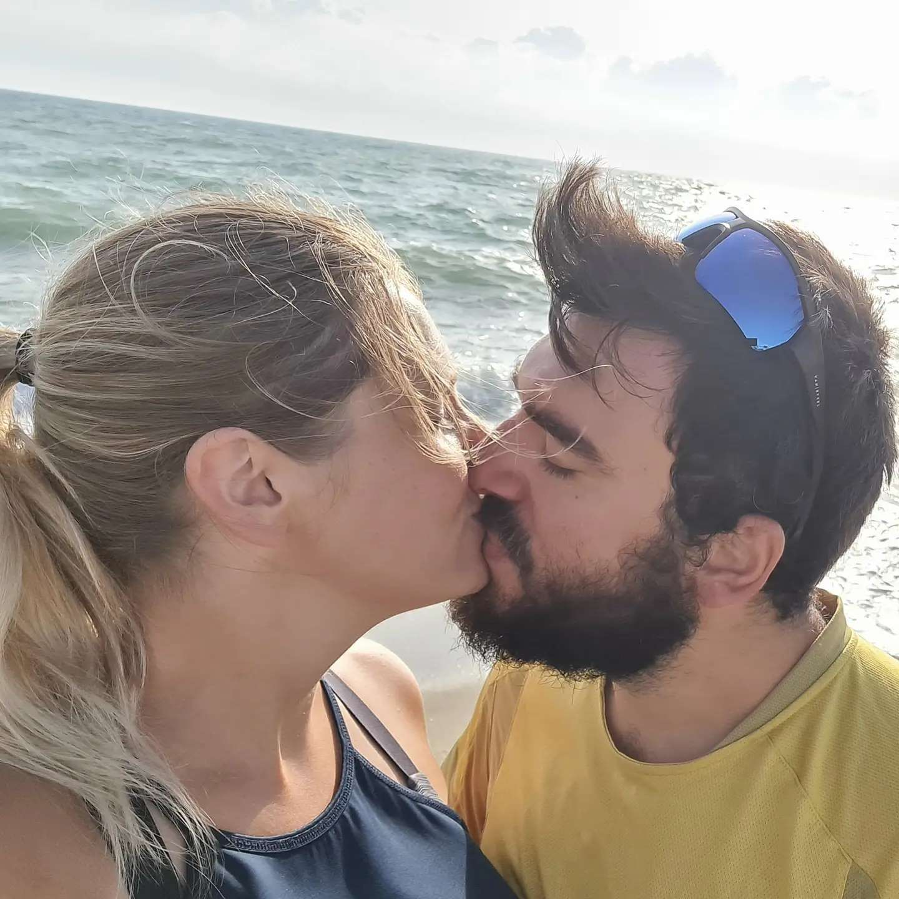
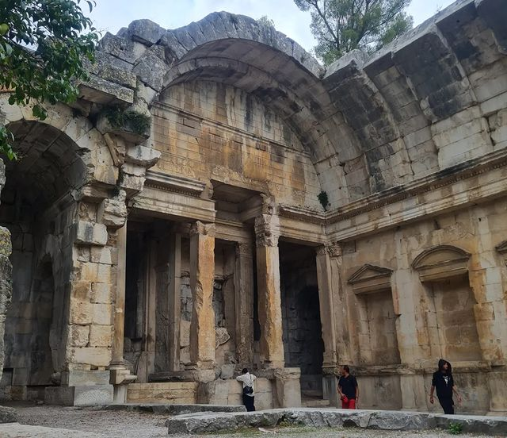

Voici un résumé bref de notre tour de France à Vélo étape par étape.
Nos débuts laborieux jusqu'au Nord
Premier jour de vélo pour nous aujourd'hui ! Nous avons démarré de Rombas et officiellement de Joeuf avec le support de la famille et l'association FER Ensemble ! Nous sommes arrivés entier à Longuyon la pluie nous a empêché de continuer plus loin! Nous reprendrons la route demain en espérant que la pluie soit partie ! On est content !!
Deuxième étape de notre tour de France à vélo ! Nous voilà à Sedan, 68km de parcouru aujourd'hui ! Nous dormons dans le jardin d'un couple super gentil qui nous a accueilli ce soir !
Nous sommes arrivés à Hirson dans l'après midi ! En passant par Charleville-Mézières sous la pluie !!! Ce soir nous sommes accueilli par Marie-Jeanne, Éric et Julien qui nous ont raconté un peu l'histoire de leur ville ! Petite maison de campagne très charmante ! On s'est même fait une copine Mitsi !!!

Nous avons beaucoup roulé aujourd'hui sous la pluie pour arriver dans le airbnb que nous avions réservé proche de Valenciennes ! Une ville qui se meurt malheureusement! Nous avons posé nos vélos juste pour aller en ville et au retour surprise plus de tram pour rentrer ! Alors auto-stop merci Abdel de s'être arrêté pour nous déposer à notre airbnb on avait en tout 2h de marche !
Aujourd'hui petit passage par la Belgique au niveau de Tournai, une ville qui a du charme avec ses maisons aux briques rouges, ses églises et cathédrales, le petit rayon de soleil de cette journée sous la pluie et le vent !!! Sur la route on s'est fait interpellé pour aider à retourner un cheval qui était malade du fait d'avoir manger du pain de mie mouillé ! Alors attention ne le faite pas ! Nous sommes ce soir à Roubaix chez un ami et demain départ pour Lille !

Petite journée pour nous ! Nous sommes sur Lille, et nous
avons déposé les vélos dans un lieu sur chez Sara qui nous
héberge ce soir ! Visite de la ville dans l'après midi avec
dégustation du plat typique! Nous avons retrouvé le soleil
enfin il était temps !
Nous sommes en Belgique et demain direction Dunkerque ! Il fait beau mais pas chaud mais ça fait du bien ! Vivement demain pour voir enfin la mer !!!

Ça y'est on est dans le Nord !!!! Nous avons été pris avec nos hôtes d'hier soir pas eu le temps de mettre de nos nouvelles ! Après 1h30 de recherche nous avons trouvé quelqu'un quelqu'un à bien voulu nous héberger ! Alex et Do qui nous ont accueilli petit gratin de moule au programme et 2 3 4 5 6.... verres pour passer une soirée plus qu'agréable !

Nous sommes restés sur Dunkerque aujourd'hui pour profiter un peu de la plage et du soleil avant de repartir sur Calais ! Nous avons eu la chance d'être accueilli le soir par Romuald Aurélie et Andrea qui nous ont chouchouté ! Barbecue avec chamalow grillé, apéro avec leur famille pour encore faire plus de rencontres, que du bonheur ! Les habitants du nord sont très chaleureux si on sait où sonner !!!! Merci encore à eux pour nous avoir laisser les encombrer le temps d'une soirée !
La Vélomaritime, pas si vélo que ça...
Arrêt sur Gravelines ce soir pour la nuit ! On s'est trouvé un petit camping tranquille proche de la plage demain encore une petite journée direction Calais !
Coucou tout le monde !!! Nous sommes arrivés à Isques un petit campement en forêt ce soir !!! Hier soir nous étions dans un gîte à Coquelles proche de Calais, 5 min de la plage c'était super chouette merci encore aux Mam's pour nous l'avoir offert et merci à Caroline et son mari pour l'hospitalité ! Le soleil reste avec nous c'est chouette ! Demain direction Le Touquet et Berck !
Une journée assez épuisante aujourd'hui sous le soleil ça se voit non ahahahaha !!! On a fait un peu trempette dans la Manche aujourd'hui au Touquet ! Ce soir on se pose proche de Berck à Merlimont où on se fait loger par Emmanuel !

Reparti ce matin vers 12h de chez Manu une superbe soirée ! Aujourd'hui passage par la baie de Somme ! Le soleil toujours avec nous ça fait du bien ! Demain ça sera autre chose ! Ce soir nuit en tente dans un petit village !
Aujourd'hui nous avons parcouru 56km pour arriver à Dieppe! Nous nous sommes arrêtés juste dans la ville d'avant pour éviter de se prendre la sauce et oui la pluie nous guette ! Ce soir nous avons eu la chance de tomber encore sur une famille super gentille Marion et Loïc qui nous ont accueilli ! On a eu le droit à le petit thé de bienvenu, et un repas chaud, en prime un dessin !!! Une belle découverte de la ville du Tréport ! Les montées étaient rudes mais ça valait le détour !
Coucou !!! Nous voilà en Normandie !!! Là on le sait c'est sure nous avons vu les vaches normandes !!! Nous attendions la pluie finalement nous avons eu de la chance ! 70km jusqu'à Fécamp! Le soir nous avons été accueilli par Elodie et Antoine des personnes super sympa qui nous ont ouvert leur porte pour la nuit ! Ils sont venus nous chercher pour ne pas que l'on rebrousse chemin et ils nous ont ramené ce matin ! La générosité des personnes que nous rencontrons nous surprendra toujours ! Une superbe soirée entouré des animaux de la ferme, chevaux, chèvres poules et les petits chiens ! Aujourd'hui direction Etretat on va prier pour que le soleil se pointe !!!

Journée sur Etretat aujourd'hui à la plage tranquille pour se dire qu'on est
tout de même en vacances ahah ! Nous aurions voulu avoir une jolie photo de
nous mais Benjamin n'arrivais pas à ouvrir les yeux pour la photo alors il
est obligé de se cacher derrière mes cheveux ! Ce soir camping sur Etretat!
Demain direction Le Havre ça va être de nouveau une journée
assez chargée!
Coucou ça faisait un petit moment oui je sais ahaha ! Nous sommes passés par Le Havre pour rejoindre le pont de Normandie, un petit tour sur honfleur et Deauville pour se poser au camping près de Houlgate ! Aujourd'hui direction Caen !!!
Ça y'est hier nous sommes arrivés à Caen nous avons eu le temps de visiter la ville ça vaut le détour on vous la conseille !!!! Aujourd'hui on ne sait pas vraiment où partir c'est compliqué... est ce qu'on monte voir les plages du débarquement ou est ce qu'on passe par les terres pour arriver plus vite au Mont Saint Michel ! Qu'en pensez vous ??
Nous sommes passés par les plages du débarquement, en espérant demain pouvoir faire un musée pour en savoir plus sur cet événement troublant !! Bon soleil si tu me lis merci de revenir un peu vers chez nous stp parce que là la pluie on en a marre ! Demain on rejoint de la famille un peu de repos on.pause les vélos !

Mini week end avec la famille !
Visiter les plages du débarquement et
monter jusqu'à Cherbourg pour allez voir les fameux parapluies !!!
Et oui
il y a 10 photos ahahah j'avoue ça fait beaucoup mais ça regroupe deux jours
quand même ! Nous avons eu le temps de poser les vélos !
Aujourd'hui direction
le Mont Saint Michel!
Passage par Granville avant d'arriver au Mont! Nous avons eu la chance de pouvoir visiter le Mont Saint Michel de nuit et de jour ! Info ? Évité les vacances d'été... Trop de monde ! En tout cas c'est quand même super jolie et on reviendra ! Aussi petit changement de programme, au vu du temps qui défile nous avons peur de ne pas être dans les temps et de devoir finir notre tour de France en plein hiver alors pour éviter ça nous avons décidé d'aller directement en direction de Nantes en passant par Rennes et de faire la Bretagne en 3 jours en voiture... oui je sais c'est pas bien mais ça nous évite de perdre presque 15 jours !
La bretagne, une si belle surprise !
Finalement nous passerons quand même par la Bretagne ! Aujourd'hui nous avons visité Saint Malo et demain nous continuerons notre visite de la ville ! Oui on change tout le temps mais on a trouvé ça dommage de ne pas passer par la Bretagne en vélo pendant notre tour de France !
Petite journée de repos sur Saint Malo ! Le soleil la pluie les deux en même temps c'est un superbe mois d'août je trouve pas vous ? Nous avons pu goûter le fameux kouign-amann une tuerie! Bord de plage, détente avant de partir sur Quimper demain. En tout cas c'était vraiment une très belle ville à refaire !
Nous sommes arrivés à Quimper hier et nous sommes restés encore aujourd'hui car nous avons trouvé quelqu'un de super pour nous héberger Marieke qui nous a fait découvrir sa ville, la meilleure crêperie de Quimper mais aussi la forêt de Huelgoat qui était juste magique !!! Demain nous partons dans une ville proche de Lorient ! En espérant que le soleil sera au rendez vous !
Depuis la dernière fois nous avons eu le temps de passer de Quimper à Lorient pour arriver sur Quiberon ! Une étape de deux jours, oui hier je n'ai pas eu le temps car nous étions accueilli par un couple David et Betty pour la nuit ! Nous avons pu voir les interceltiques de Lorient, rencontrer une dame qui nous a raconté un peu des aventures, nous avons fait un petit bout de chemin avec elle, et visiter la presqu'île de Quiberon ! Absolument à faire, nous avons de la chance que David nous ai déposé ce matin ! Nous voilà en route pour Vannes en passant par Carnac!!! Promis je poste ce soir !
Ce soir petit bivouac proche de Vannes ! Nous sommes passés par Carnac c'était sympa ! On a croisé un bar fermé malheureusement mais super sympa avec des sculptures en bois. Demain petite visite de la ville et du golf du Morbihan !
Aujourd'hui nous avons visité Vannes pour arriver à Férel, nous avons eu la chance de voir un passage de bateau à voile ! Le soleil est de retour je peux vous le dire ! Demain direction Saint Nazaire ! Ce soir nous dormons chez Julien et Cécile qui nous ont accueilli chez eux pour le nuit !
Il était une fois dans l'ouest... De la france.
Petit week end très sympatique avec des amis sur Saint Nazaire et sur l'île d'Arz ! Nous avons eu de la chance avec le soleil dans le dos, un accueil chaleureux ! Nous retrouvons nos vélos demain pour un trajet vers Nantes 75km... ça va piquer après deux jours complets de repos !
Nous sommes arrivés sur Nantes ça y'est ! La route était plate c'était cool! Merci à la sœur de Benjamin de nous prêter son appartement le temps de la visite ! Petit repos encore avant de commencer la grande descente jusqu'à Biarritz et les Pyrénées ! Demain visite de la ville !
Nous sommes repartis de Nantes aujourd'hui et nous avons roulé 70km en direction des Sable d'Olonnes ! Les noms des villes sont à mourir de rire rire Vendée ! Nous avons vu nos premières vignes enfin ahaha après les maïs et les pomme de terre le blé les betteraves, les choux ben tout en faite ahah ! Nous avons aussi récupéré un chaton qui été perdu et abandonné au milieu d'un terre plein central! Nous avons eu la chance de tomber sur quelqu'un qui a pu le prendre pour l'emmener à la SPA le lendemain ! Et ce soir bivouac à côté du route dans un champ sur de la paille, la nuit va être longue peut être !
On a enfin du réseau stable ! Alors on vous fait un petit récapitulatif ! Nous sommes partis de Nantes pour arriver aux Sables d'Olonnes une superbe ville, nous avons emprunter les voies cyclables de la Vendée qui étaient la plupart sois dans les bois soit au milieu des marais de sel ! C'était juste magique ! La Vendée nous a fait rêver ! Le soleil et un peu de pluie ! Nous avons passé par La Rochelle et ce soir nous arriverons vers Soulac sur mer ! Aujourd'hui passage par Royan et le ferry ! Chaleur !!!
Nous sommes arrivés à Soulac sur Mer ce soir c'est juste magnifique! Tu avais raison Tara ! Les plages sont belles, au milieu des pins et du Sables nous avons trouvé un petit camping super sympa pas loin de la plage pour pas cher !!!!!!!!!!!! Vous aurez d'autres photos demain ! Demain on ne sait pas si nous restons un jour de plus ou si nous partons en direction de Lacanau pour profitez aussi des plages ! En tout cas ce soir c'est détente !
Changement de décor complet !!! On est dans le sud ça y'est! Nous sommes à Lacanau, nous nous étions arrêtés à Soulac pour deux nuits tellement c'était pas cher et c'était beau ! Demain direction les dunes du Pilat ! Ce soir on dort dans un camping 5* avec complexe aquatique , oui oui on s'est fait plaisir j'avoue mais demain on se fait héberger !
Nous sommes proche de Mimizan bivouac pour nous ce soir ! Nous avons eu la chance d'être accueilli par Nicole hier soir proche des dunes du Pilat que nous avons visité aujourd'hui ! Une fin d'après midi agréable ! Aujourd'hui nous nous sommes crus dans Pékin express car nous avons deux autres cyclistes qui font sûrement le même parcours jusqu'à Biarritz et on joue au chat et à la souris, on les dépasse, ils nous dépassent et ainsi de suite ! Ça fait 3 jours ahaha aujourd'hui c'est nous qui avons gagné ! PS: on les appelé sportix et sportax car ils ne parlent jamais et disent jamais bonjour et foncent comme des vraies cyclistes.
Bon nous sommes encore dans les Landes près des Basques ! A Hossegor dans un petit camping avec piscine pas cher ! Il fait beau, mais je suis tombée malade il fallait bien que ça arrive ! Entre lacs et plage franchement le paysage est top ! Nous avançons doucement car nous devons être à Orthez le 4 septembre donc on a été trop vite alors nous ralentissons. Petit apéro et nous avons goûté le gâteau Basque !
Nous nous sommes arrêtés dans un camping où le soir nous avons participer à un Blindtest et oui nous étions parmi les vainqueurs!!! Ça ressemble à des vacances ! Petite pause au niveau de Biarritz pour visiter Bayonne et Espelette ! Nous avons redouté la pluie toute la journée mais nous avons eu de la chance elle a attendu la nuit ! Aujourd'hui nous repartons en direction d'Orthez sous la pluie biensur ! Même dans le sud il pleut...
Du sud-ouest au sud-est!
En pleine cambrousse, nous sommes passés par des champs de kiwi c'est nouveau !! Après les vignes, nous avons les kiwis on adore ! Nous nous sommes arrêtés pour en prendre quelques uns nous vous dirons s'ils sont bons ! Ce soir nous sommes arrivés à Orthez ! Demain, nous devons vous le dire nous prenons le train pour allez jusqu'à Toulouse car les Pyrénées nous semblaient trop compliqué pour nous petit débutant ! En ayant croisé plusieurs cyclistes qui nous ont dit qu'il était préférable pour nous de prendre un train car ça serait pas facile avec 50kg à trainer. Mais on reprend notre vélo à Toulouse ! Ce soir nous dormons dans une ancienne clinique, un peu flippant mais c'est insolite!
Hier nous sommes arrivés sur Toulouse une énorme ville impossible de la visiter en un jour nous serons obligé d'y revenir je pense ! Nous avons fait la visite du centre et rencontrer un couple Philippe et Marie le soir qui nous a hébergé, nous a concocté un petit repas super bon ! Ils nous ont parlé de tous leurs voyages à vélo dans plein de pays différents, ça nous a donné plein d'idée et ça nous a fait rêver ! Ce matin nous avons repris la route sous une chaleur à mourir ahahaha on su à grosse gouttes. Longer le canal du midi et ben franchement c'est agréable au bord de l'eau. Bine évidement nous avons rencontrer un chat, il était trop mignon. Ce soir petite halte avant d'arriver sur Carcassone demain ! On a hâte !
Salut salut !!! Nous sommes enfin arrivé à Carcassone. Nous avons pu la visiter en long en large et en travers et franchement ça vaut vraiment le détour. Le soleil nous a fait la visite. Hier soir nous avons pu faire la connaissance de Josy et de ses enfants qui nous ont accueilli pour la nuit, soirée très agréable, en forme pour repartir ce matin. Demain nous partons pour Narbonne une grosse journée ! Photo de nos têtes ça fait longtemps qu'on a pas été au coiffeur ahah. Ce soir camping.
Nous avons du laisser nos v√©los sur Narbonne pour la r√©vision du coup location de voiture pour un jour pour aller visiter Collioure, Argel√®s, Gruissan ben tout c'est petits coins. Hier r√©cup√©ration des v√©los et nous sommes partis en direction du Cap d'Agde, nous devions rouler 20km car il √©tait d√©j√† 19h mais finalement la nuit est tomb√©e tr√®s vite, nous avions peur de chaque endroit où nous passions alors nous avons continu√© pendant 50km pour arriver vers 00h √† c√¥t√© d'un camping où nous avons pos√© la tente pour la nuit. Rouler de nuit √ßa fait peur üò±
Nous avons fait une petite pause au grau du roi pour rejoindre des amis qui nous ont hébergé pour deux nuits ! Journée plage, balade dans la ville, c'était des minis vacances avant de reprendre les vélos aujourd'hui en direction de la Camargues. Nous avons eu à peu près le soleil en espérant que ça continue ! A plus pour de nouvelles aventures !
Voilà nous sommes passés par la Camargue. Nous avons pu voir les fameux chevaux de la Camargue, les taureaux et les flamants roses. Une belle balade de 87km hier qui nous a fait passé par les petits chemins. Nous avons laissé une trace de notre passage sur la plage de l'art. Nous nous sommes arrêtés dans un camping super sympa on se serait cru au Texas. Puis nous avons fait route pour Gréasque où nous avons retrouvé mamie et papi. La pause s'impose de nouveau. Nous avons aussi une autre mamie sur Toulon alors la pause va être bien remplie. Dans tous les cas nous allons avoir la chance de visiter les environs. Ce soir un lit nous attend
Un repos bien mérité avant la remontée !
Nous sommes toujours dans le sud au repos chez papi et mamie ! Aujourd'hui pour mon anniversaire nous avons été visiter Sisteron qui est une très belle ville, route entre les montagnes, petite glace et tiramisu le soir. Demain nous avons prévu une petite journée visite aussi.
Encore une petite journée de visite aujourd'hui ! Nous profitons car ce sont des villages que nous aurions pas pu visiter à vélo vous auriez vu la route vous auriez fait pareil que nous ahahah ! Paysages incroyables et complètement différent c'était juste fou ! On passe du rouge feu à du vert pomme ! De l'eau transparente, des ruelles tellement vivante. Je suis tombée sous le charme de ses deux villes Roussillon et Fontaine de Vaucluse.
Nous avons fait un tour sur Toulon pour aller voir Mamie Martine. Nous avons visité le vieux Toulon, pris de la cade à dédé au marché, un pastis, un bain de soleil, des forces pour la suite. Une longue pose, la reprise va être dure moi je vous le dit mais on se dit que nous sommes sur la dernière ligne droite. Nous retourner à Greasque pour les derniers jours avant le début de la reprise lundi.
Une journée de visite du pont du Gard et de la ville de Nîmes. Deux endroits super jolie, une ville qui nous donne envie de revenir pour la visiter plus en profondeur. Nous avons une pause déjeuner et c'était trop boooon, oui nous sommes toujours aussi gourmand! Nous repartons demain, notre vélo vont sortir du garage pour nous aider à remonter jusqu'à chez nous. Priez pour que notre dernière ligne droite le temps soit clément avec nous.
Ça y'est nous avons repris la route ! C'est dur !!!! Le mal de fesse est revenu, les genoux aussi mais nous avons tout de même fait 67km pour la reprise ça va. Nous sommes passés par Avignon malheureusement nous n'avons pas pu danser dessus. Nous nous sommes arrêtés pas loin de Montélimar, visite de la ville et direction Valence pour y passer la nuit. Je mettrais les photos de la ville ce soir !
Petit passage à Montélimar, et on ne pouvais pas ne pas goûter le nougat de Montélimar quand même ! La ViaRhona est assez tranquille, tout est assez plat le vent par contre nous aide pas mais on se dit que bientôt nous serons à la maison au chaud ! Nous faisons route pour Vienne demain! Bon nous allons croiser les doigts en espérant qu'il ne fait pas trop trop froid demain !

Bientôt de retour chez nous
Nous avançons nous avançons ! Nous avons fait la route jusqu'à Vienne par la ViaRhona. On a pu un peu la visiter et nous avons eu la chance d'avoir une petite animation la course des garçons de café, c'était marrant. Pour le peu de kilomètres qu'il restait nous avons décidé de pousser jusqu'à chez ma grand mère et ma tante qui habite dans la banlieue de Lyon à Venissieux. Aujourd'hui visite de Lyon et ensuite direction Dijon.
Coucou la compagnie ! Aujourd'hui visite de Lyon sous le soleil avec le vent froid tout de même ! Winter is coming... C'est une ville qui a du charme, c'est assez jeune et il y a plein de chose à découvrir pas assez en une matinée ça c'est certains nous reviendrons pour la visiter plus en profondeur. Nous avons la possibilité de goûter la tarte à la praline rose de Lyon, maman si tu vois ce poste il faut que tu essaies d'en faire une maison car c'est trop bon. Dijon on arrive !
Hier nous avons repris la route pour arriver à Mâcon, nous avons pris un train pour arriver à Dijon hier.. Oui la fatigue se fait ressentir et le froid est de plus en plus présent. C'est pour cela que nous prenons de nouveau un train pour faire Dijon Nancy afin de rentrer à la maison et retrouver notre bébé Ryo. Nous finirons notre trajet à vélo jusqu'à chez nous à Rombas. Nous avons eu le temps de visiter la ville de Dijon qui etait super chouette, elle était jolie et mignonne. Il y avait plein de truc à visiter. Nous sommes actuellement dans le train pour Nancy.
Bonjour pour la dernière fois !
Oui nous sommes arrivés samedi dernier chez nous !
Nous avons retrouvé notre bébé chat, nous avons roulé assez vite afin d'arriver avant la nuit.
Le soir nous avons été à un bapteme et mariage,
et depuis nous avons pas arrêté d'aller à droite à gauche.
Aujourd'hui je vous fait un poste pour vous dire que c'est la fin de notre aventure à vélo. Ce tour a été éprouvant mais plein de
rebondissement de rencontre, de passage par des endroits magnifiques, des moments de joies de douleurs de tristesse. Nous sommes passés par toutes les phases et nous sommes encore ensemble.
Cette aventure nous a unis encore plus que ce qu'on l'était. Nous rêvons déjà de notre prochain projet.
Merci à tous de nous avoir suivi et de nous avoir soutenu dans ce projet inconcevable pour certains.